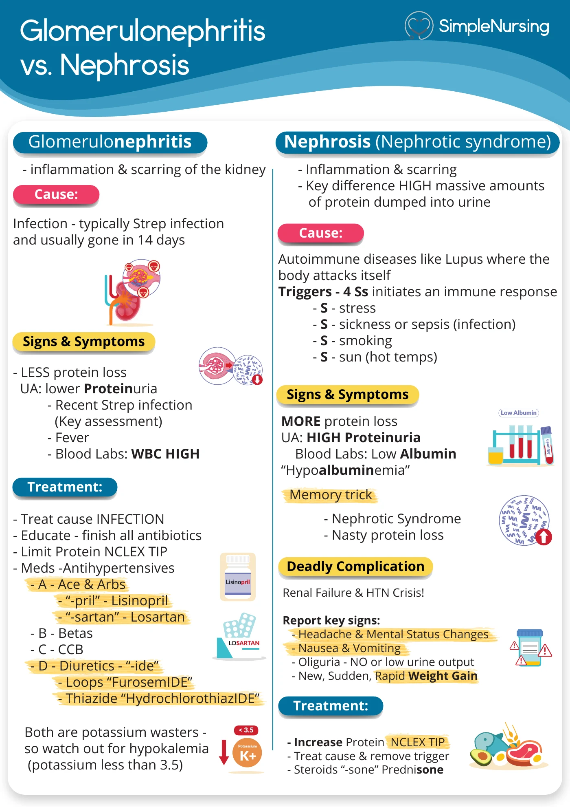

Which urine finding is classic for post-streptococcal glomerulonephritis?
Answer
Cola/reddish-brown urine
Reasoning
Glomerular inflammation causes hematuria → cola-colored urine, plus HTN, edema, and oliguria.
Why the other answers do not fit
- Clear, dilute urine
- Glucosuria
- Ketonuria
Shared reasoning for choices without a separate note: Glomerular inflammation causes hematuria → cola-colored urine, plus HTN, edema, and oliguria.



![Increased intracranial pressure shown as brain, blood and cerebrospinal fluid competing for one fixed space inside the skull, with a labelled sagittal head. Causes can include oedema, bleeding, a mass and obstructed CSF flow. Early concerns: declining level of consciousness, worsening headache, vomiting, new neurologic deficits. Urgent findings: pupillary change, decorticate posturing with arms flexed toward the chest, decerebrate posturing with arms extended and internally rotated. A late-warning panel shows Cushing's response on a monitor - systolic 180 over diastolic 60 with a widening pulse pressure, heart rate 45, respirations 8 and irregular - captioned do not wait for this triad. Nursing response: escalate immediately, reassess airway and oxygenation, repeat the neuro exam, follow ordered ICP management. A final panel notes lumbar puncture may be unsafe with mass effect or herniation risk](../../img/infographics/37-increased-icp-recognition.webp)